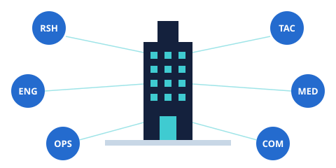
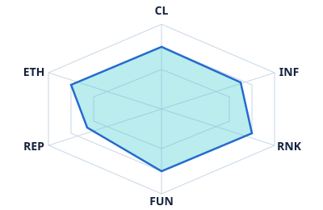
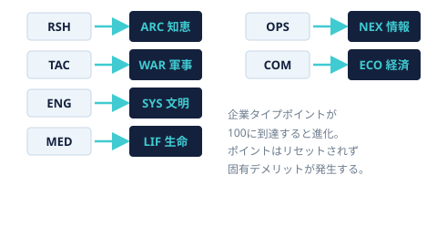

会社は、未来世界において研究、戦闘、技術、医療、情報、商業などの活動を行う組織である。
会社を所有することで、会社が持つ資金や設備、社会的な信用、影響力、権力などを利用できる。
会社には企業タイプが存在し、1つの会社につき1種類だけ選択できる。会社の企業タイプと、それに対応する活動を行うことで、企業タイプポイントによる補正を受けられる。
会社には以下のステータスが存在する。CL、INF、RNK、FUNは1から10の範囲で管理する。REPとETHはこれらとは異なる評価値として扱う。
| CL | 信用 |
|---|---|
| INF | 影響 |
| RNK | 権力 |
| FUN | 資金力 |
| REP | 企業評価、貢献度 |
| ETH | 企業倫理 |
REPとETHは、会社設立時の基礎ポイントから決定する。CL、INF、RNK、FUNは、会社設立時に各種の値から算出し、1～10に収める。
会社設立時に、以下の企業タイプから1つだけ選択する。企業タイプは自由に1つ選択でき、選択した企業タイプ以外に、企業タイプポイントを振り分けることはできない。
| RSH | 研究 |
|---|---|
| TAC | 戦闘、防衛 |
| ENG | 技術 |
| MED | 医療 |
| OPS | 情報 |
| COM | 商業 |
会社設立時、基礎ポイントを決定する。
算出した基礎ポイントを、REP（企業評価、貢献度）とETH（企業倫理）に自由に振り分ける。

REPとETHを決定した後、会社のCL、INF、RNK、FUNを算出する。CL、INF、RNK、FUNは1から10の範囲で管理する。REPとETHは別の評価値である。
FUN（資金力）
REPが高いほど資金力が上昇し、ETHが高いほど資金力が低下する。倫理を捨ててリスクを取る会社（いわゆるブラック企業）ほど資金力が高くなり、社員や倫理を重んじる会社（いわゆるホワイト企業）ほど資金力は低くなる。
INF（影響）
企業タイプポイントが高いほど、専門分野における会社の影響力が高くなる。また、REPが高い会社ほど社会的な評価や実績による影響力を持ちやすい。算出したINFが小数になる場合は切り上げる。
CL（信用）
社長自身の社会的信用と、会社の倫理性をもとに決定する。
RNK（権力）
社長自身の権限と、会社の信用をもとに決定する。
企業タイプポイントは、会社が専門分野でどれだけの力を持っているかを表す。
設立直後の企業タイプポイントは、0〜24程度が目安となる。職業技能の高い社長が率いる会社は、30前後から始まることもある。企業タイプポイントはゲーム中の活動によって増加していき、100に到達すると企業タイプが進化する。
企業タイプポイントは、選択した企業タイプにのみ適用される。例えばRSHを選択した会社であれば、企業タイプポイントは研究にのみ使用される。RSHを選択した会社が、企業タイプポイントをTACやMEDなどへ振り分けることはできない。
会社が自社の企業タイプに対応する活動を行う場合、会社が保有する専門設備や環境を利用できるため、企業タイプポイント分の大幅な補正を受ける。
会社外で同じ活動を行う場合は、企業タイプポイントの10分の1の補正を受ける。会社内では会社が持つ専門設備を利用できるため、会社外よりも大きな補正を受ける。
企業タイプに対応する技能は、RSH・TAC・ENG・MED・OPSは同名の技能、COMはCWD（指導）とする。
企業タイプポイントが100に到達した場合、その瞬間に企業タイプが進化する。企業タイプポイントは進化によってリセットされず、進化後もそれまでに獲得した企業タイプポイントをそのまま保持する。
進化によって、会社ができることや社会への影響力が増加する。ただし、進化した企業タイプには固有のデメリットが存在する。

進化のデメリットは、原則としてその会社に所属する社員（社員として所属するキャラクター・NPC）に対して適用される。会社そのものに適用されるものは、その旨を明記する。
| RSH 研究 | 進化先 ARC 知恵 — 全研究が可能になる。 デメリット：所属社員の汚染値の増加量が1.5倍になる（増加量を1.5倍して端数は切り上げ。例：5増加する場合は7.5→8）。 |
|---|---|
| TAC 戦闘、防衛 | 進化先 WAR 軍事 — 国家級武装企業となる。 デメリット：会社の支出が1.5倍になる（端数は切り上げ）。 |
| ENG 技術 | 進化先 SYS 文明 — 大体のことが可能になる。 デメリット：所属社員が行うCCB判定のファンブル域が2増える（96～100 → 94～100）。 |
| MED 医療 | 進化先 LIF 生命 — 生命関連の活動が可能になる。 デメリット：会社のETHが3以下のとき、所属社員の最大HPが(4 − ETH)下がる（ETH0で−4、ETH3で−1）。最大HPは1未満にならない。 |
| OPS 情報 | 進化先 NEX 情報 — 情報管理が可能になる。 デメリット：所属社員がSANチェックに失敗したとき、SANの減少量が1増える。 |
| COM 商業 | 進化先 ECO 経済 — 資金力が大幅に増加する。 デメリット：所属社員のPOWを使う能力値判定（CCB<={POW}×5）の判定値が10下がる。作成時に算出したSANなどの値は変わらない。 |
会社のCL、INF、RNKは、会社そのものが持つ社会的な力を表す。会社の力を利用して行動する場合、会社のステータスそのものを判定に使用できる。これらはキャラクター自身のCL、INF、RNKとは別に、会社そのものの力として扱う。
| CL 信用 | 会社の社会的信用や信頼性を利用する判定に使用する。 |
|---|---|
| INF 影響 | 会社の影響力や人脈などを利用する判定に使用する。 |
| RNK 権力 | 会社の権限や立場、組織的な力を利用する判定に使用する。 |
会社の収入は、FUNとCLによって決定する。収入はダイスによって変動する。
CLが高い会社は、信用によって取引先や融資に恵まれるため、収入が増える。
会社を意図的に休業状態として扱う場合は、ダイスによる収入とは関係なく収入を0円にすることができる。
不祥事判定
収入を算出するたびに、不祥事判定を行う。ETHが低い会社ほど不祥事が発生しやすい（ETH0で40%、ETH1で30%、ETH2で20%、ETH3で10%、ETH4以上では発生しない）。
不祥事が発生した場合は、さらに1D10を振り、出目×10%だけその収入が減少する。出目が10の場合、収入は0円になる。ブラック企業は大きく稼げる代わりに、不祥事のリスクを負う。
会社の支出は、企業タイプポイントと会社の社会的ステータスによって決定する。
企業タイプポイントが高い会社ほど、専門分野に対する設備や活動規模が大きくなるため、支出も増加する。また、INF、RNK、REP、ETHが高い会社ほど、社会的活動や組織維持に必要な支出が増加する。
会社は以下の手順で作成する。
- 社長を決定する。
- 企業タイプを1種類選択する。
- 基礎ポイントを算出する（c(社長の職業技能 ÷ 10) + 2D5）。
- 基礎ポイントをREPとETHに自由に分配する。
- REPとETHを使用してFUNを算出する。
- FUNを使用して企業タイプポイントを算出する（c(社長の職業技能 ÷ 5) + FUN）。
- 企業タイプポイントとREPからINFを算出する。
- 社長のCLとETHから会社のCLを算出する。
- 社長のRNKと会社のCLから会社のRNKを算出する。
- 会社の収入を算出する（不祥事判定を含む）。
- 会社の支出を算出する。
これで会社の作成は完了する。
- 企業タイプは1種類のみ選択する。
- 企業タイプポイントは選択した企業タイプにのみ適用される。
- REPとETHは基礎ポイントを自由に分配して決定する。
- CL、INF、RNK、FUNは会社設立時の計算式によって決定する。
- CL、INF、RNK、FUNは1から10の範囲で管理する。REPとETHは別の評価値である。
- 企業タイプポイントは100に到達すると企業タイプが進化する。
- 企業タイプポイントは進化後もリセットされない。
- 会社のCL、INF、RNKは、キャラクター自身のCL、INF、RNKとは別のステータスとして扱う。
- 会社の収入と支出はダイスによって変動する。
- ETHが低い会社は、不祥事判定によって収入が減少することがある。
- 会社を休業状態として扱う場合、収入を意図的に0円とすることができる。